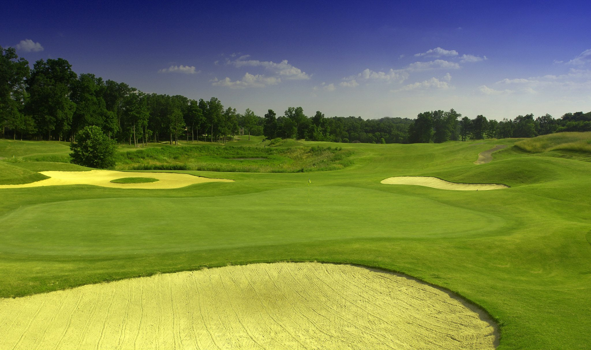

The Legacy Golf Course is one of Middle Tennessee’s most scenic golf destinations, situated just a short drive north of Nashville in historic Springfield. Designed by PGA Hall of Fame legend Raymond Floyd, this 18-hole championship course offers a masterful layout that winds through rolling hills, mature woodlands, and protected wetlands.
With narrow, tree-lined fairways, strategically placed bunkers, and undulating bentgrass greens, The Legacy demands both precision and strategy from golfers of all skill levels. As a certified Audubon Cooperative Sanctuary, the course provides a serene, natural environment where every round is as visually stunning as it is competitively rewarding.
The Legacy stretches 6,776 yards from the back "Floyd" tees, playing to a par 72. With a course rating of 73.0 and a slope of 134, it offers a genuine test of skill. The layout is celebrated for its dramatic elevation changes and a design that forces players to use every club in the bag, rewarding accurate ball striking and a steady hand on the fast, true-rolling greens.
Raymond Floyd’s vision for The Legacy was to create a "core" golf experience where no two holes feel the same, avoiding the concept of a single signature hole in favor of a consistently high-quality 18-hole journey. The front nine offers a masterful mix of open meadows and framed corridors, while the back nine tightens significantly. Players often find the back nine to be the highlight of the round, as it requires disciplined tee shots to navigate dense hardwoods, protected wetlands, and dramatic elevation changes.
Beyond the course, The Legacy offers a top-tier golf experience. The clubhouse features The Legacy Grille, a favorite spot for a post-round meal with views of the closing holes. The pro shop is stocked with premium equipment and apparel, and the extensive practice area—featuring a chipping green and bunkers—is ideal for warming up or taking a lesson from on-site professionals.
Located at 100 Raymond Floyd Drive in Springfield, The Legacy is an easy 30-minute drive from downtown Nashville. Offering a peaceful "destination" feel away from the city's hustle, the course is open to the public with tee times available online or by phone. It remains one of the premier values for high-quality golf in the region.